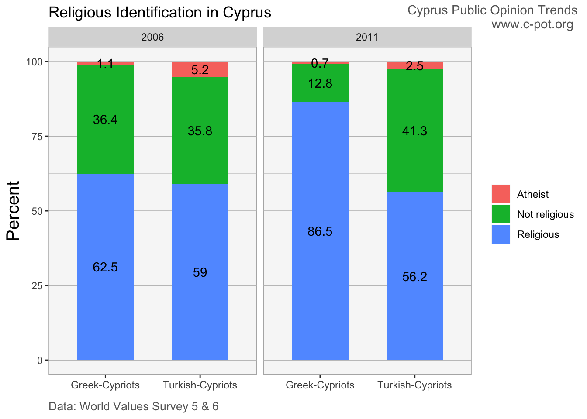
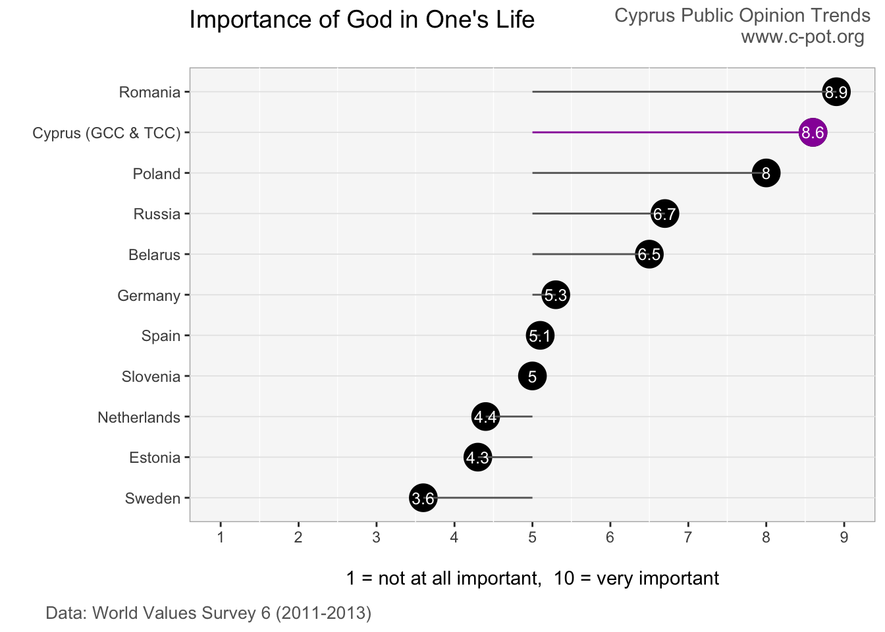

How important is religion in Cypriots’ lives in light of global trends in religiosity?
• Religious values are prevalent in Cyprus and entrenched in people’s identity, regardless of whether one practices or considers themselves to be religious.
• Nearly all Cypriots consider themselves to be part of a religion or religious denomination, irrespective of whether they attend religious services.
• Overall, Greek-Cypriots tend to be slightly more religious than Turkish-Cypriots.
• A large majority of Cypriots state that God plays an important role in their life.
Η Θρησκευτικότητα στην Κύπρο
Πόσο σημαντικός είναι ο ρόλος της θρησκείας στις ζωές των Κυπρίων, δεδομένου των παγκόσμιων τάσεων γύρω από την θρησκευτικότητα;
• Οι θρησκευτικές αξίες είναι διαδεδομένες και κατοχυρωμένες στην κοινωνική ταυτότητα των Κυπρίων, ανεξάρτητα από το αν κάποιος θεωρεί τον εαυτό του ως θρησκευόμενο.
• Σχεδόν όλοι οι Κύπριοι δηλώνουν πως ανήκουν σε μία θρησκεία ή θρησκευτικό δόγμα, ασχέτος από το αν ασκούν θρησκευτικά καθήκοντα ή συμμετέχουν σε θρησκευτικές λιτουργίες.
• Γενικά, οι Ελληνοκύπριοι τείνουν να είναι λίγο πιο θρήσκοι από τους Τουρκοκύπριους.
• Η μεγάλη πλειοψηφία των Κυπρίων δηλώνει ότι ο θεός διαδραματίζει σημαντικό ρόλο στη ζωή τους.
Kıbrıs’ta Dindarlık Eğilimi
Dindarlık konusundaki küresel eğilimlerin ışığında, Kıbrıslıların hayatında din ne kadar önem teşkil ediyor?
• Kıbrıs’ta dini değerler yaygın olarak görülüyor ve bu değerler, kişilerin dinin gerekliliklerini yerine getirip getirmediklerinden veya kendilerini dindar olarak görüp görmediklerinden bağımsız olarak kimliklerinin bir parçası haline gelmiş bulunuyor.
• Genel olarak, Kıbrıslı Rumlar Kıbrıslı Türklere kıyasla biraz daha fazla dindarlık eğilimi gösteriyor.
• Kıbrıslıların büyük bir bölümü, Tanrı’nın hayatlarında önemli bir rol oynadığını belirtiyor.
This post explores the importance of religion in Cypriots’ lives in light of global trends in religiosity. The decline of traditional religious practices and beliefs across developed societies has eroded the role of religious institutions in people’s lives. At the same time, traditional religious beliefs and values remain strong in developing societies, meaning that there are more people with such beliefs in the world (Norris & Inglehart, 2004).
How do Cypriots identify with religion given these global trends? Three aspects of religiosity that capture the significance of religious values and beliefs in Cypriot society are examined: (i) belonging to a religion, (ii) whether one considers themselves to be religious, and (iii) the importance of God in one’s life. The analysis uses World Values Survey / European Values Study data from 2006, 2008 and 2011. While these data are not particularly recent, they comprise perhaps the only publically available surveys of religious preferences across both Greek-Cypriots and Turkish-Cypriots, and can still provide important insights.
Religious belonging is pervasive in Cypriot society, irrespective of whether people practice or attend religious services. Nearly all Cypriots consider themselves to be part of a religion or religious denomination. Across the three surveys, 93-99% of Greek-Cypriots and Turkish-Cypriots state that they belong to a religion.
Interactive visualization: hover over to display values, double-click to zoom, click legend to hide/show specific lines
When asked if they consider themselves to be religious, more than half say that they are religious, as opposed to not religious or atheist. While 2006 data suggest relatively similar levels of religious identification among Greek-Cypriots and Turkish-Cypriots, 2011 data suggest that Greek-Cypriots consider themselves to be significantly more religious than Turkish-Cypriots. Very few people identify as atheist. In both years aethism tends to be higher among Turkish-Cypriots, as around 1% of Greek-Cypriots and 3-5% of Turkish Cypriots identify as atheist.

In addition, a large majority of Cypriots state that God plays an important role in their life. Asked to place themselves on a 10-point scale where ‘1’ means that ‘God is not at all important in my life’ and ‘10’ means that ‘God is very important in my life’, Cypriots score higher than nearly all other European countries in Wave 6 of the World Values Survey (2011 - 2013). Cypriots’ average on the 10-point scale is 8.6. Out of eleven European countries, Cypriots rank 2nd after Romania. Greek-Cypriots and Turkish-Cypriots rate the importance of God in their lives very similarly.

This analysis indicates that religion is entrenched in Cypriots’ identity, regardles of how often one may practice or if one considers themselves to be religious. Even those that are not religious clearly feel that they belong to a religious community. We see the prevalence of religion reflected in school curricula, the influence of religious leaders in government affairs, and the frequent media platforms given to religious leaders to discuss political and social affairs.
Why are religious values so prevalent in Cyprus? Research shows that exposure to existential threats, i.e. physical, societal, and personal threats, drives religiosity (Norris & Inglehart, 2004). It persists most strongly among the more vulnerable that typically face survival-threatening risks, particularly those that live in low-income societies and failed states. In this regard Cypriots, and the physical and psychological threats they face due to the continuing conflict on the island, fit this explanation.
Data sources
World Values Survey: WVS 5, WVS 6
European Values Study: EVS 4
References
Alpha News. (2019). Metropolitan Bishop of Paphos: Corona Virus Cannot be Transmitted Through Holy Communion. Available here.
Norris, P., & Inglehart, R. (2004). Sacred and Secular: Religion and Politics Worldwide. Cambridge University Press.